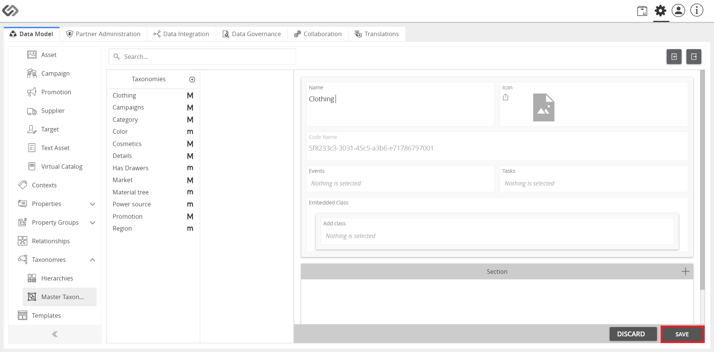

Manage Taxonomy
The feature, ‘Manage Taxonomy’ is an interface that provides users the ability to create, update, edit, or delete taxonomies.
It is the primary way that we update taxonomies in the Contentserv system.
| Key Term: |
- Taxonomy: a taxonomy is a scheme of classification used for an organization’s products.
|
| Description: |
- Taxonomy management is facilitated in the configuration section of Contentserv.
- The interface gives you the flexibility to add levels to the taxonomy vertically and horizontally.
- When the taxonomy is given a level vertically, it becomes more specific under that category.
For example, a taxonomy may have a Fashion category which may be made more specific with a Pants subcategory.
- When the taxonomy is given a level horizontally, it adds a new branch that products can be categorized into making the classification broader in scope.
For example, a taxonomy with an existing Fashion category may also have an Electronics category on the same level as Fashion.
This would reflect a retailer with many different product lines.
- Use the plus (+) buttons to add levels to your taxonomy, where required.
- A store’s taxonomy can be configured in many different ways.
|
| Related topics: |
|
| Application: |
- Let’s create a simple taxonomy for a retailer, which sells fashion and electronics.
- The highest level of classification would be Fashion and Electronics.
- The classification would be made deeper under each category to add specificity.
See diagram for a sample configuration:

|
How to do: Simple Taxonomy Tree
Here’s how to do a simple taxonomy tree.
- Click the Administration icon.
- Click the Master Taxonomies button.
- Click on the “+” icon to create a new taxonomy.
- Enter the necessary data, click the Create button, and click Save.

- To make a hierarchy, click on the created taxonomy then click on Add New Level + button.
- Click on the “+” icon to add a Property Collection, select from the dropdown list, and click Apply.
- Go to PIM. Hover on the “+” icon and select the product.
- Enter data and click Add Taxonomy.
- For additional classification, click Classify further.